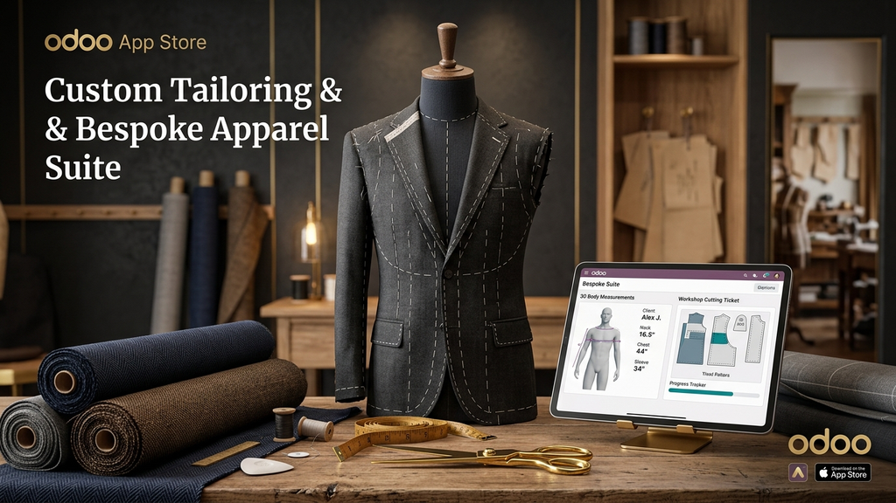

The complete sartorial operating system for custom tailors, couture ateliers, and made-to-measure (MTM) brands. Replace fragile paper cards and spreadsheets with precision Anatomical Measurement Profiling, Dynamic Style Customizers, Workshop Cutting Tickets, and Fitting Trial Schedulers.
Standard ERPs force mass-production fixed sizes (S, M, L) onto high-end bespoke garments. Here is how this suite transforms your atelier:
Engineered specifically for high-end tailoring houses, Savile Row style ateliers, and custom garment manufacturers.
Comprehensive measurement matrix: Chest, Neck, Shoulder Across Back, Sleeve Length, Bicep, Wrist, Jacket Length, Trouser Waist, Hips/Seat, Inseam, Outseam, Thigh, Knee, Bottom Opening, and Crotch Rise with unit support (Inches & Centimeters).
Master pattern cutters require more than raw inches. Record spinal posture (Erect, Stooping, Balanced), shoulder slope (Square, Sloping, Asymmetric), chest shape, and abdomen profile to ensure zero back-collar roll and flawless drape.
Allow clients to customize every detail: Lapel (Notch, Peak, Shawl), Button Stance (1-button, 2-button, DB 6x2), Vents (Side, Center, Ventless), Linings (Full Bemberg, Half-lined), Trouser Pleats, and Cuffs with automatic premium price surcharges.
Generate professional QWeb PDF cutting tickets with 1-click. Contains client details, due date, cloth batch numbers, anatomical posture notes, raw vs. finished cutting adjustments, and artisan sign-off boxes for cutting, assembly, and quality control.
Follow the traditional sartorial lifecycle: Draft Consultation → Cutting → Assembly → 1st Basted Skeleton Fitting → Alterations → 2nd Forward Fitting → Ready → Delivered with a built-in fitting calendar.
Dedicated embroidery specifications: Client initials, typography font (English Script, Serif, Modern Sans, Block), thread color, and placement position (Inside pocket facing, left cuff, collar felt, or trouser waistband).
Install with 1-click. Standard parameters and suits are pre-configured.
Use the Rapid Measurement Wizard to record client metrics in under 2 minutes.
Select lapel, closure, vents, lining, and cloth allocation.
Print the PDF Cutting Ticket for your cutters and schedule fitting appointments.
| Supported Odoo Versions | Odoo 17.0 & Odoo 18.0 |
| Supported Editions | Community, Enterprise & Odoo.sh Cloud |
| Base Module Dependencies | base, mail, sale_management, stock |
| Commercial License | OPL-1 (Odoo Proprietary License v1.0) |
| Support & Updates | Lifetime updates for version 17.0 & 18.0 |